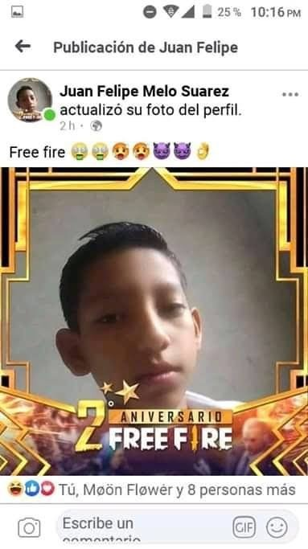
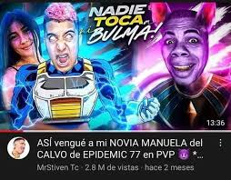
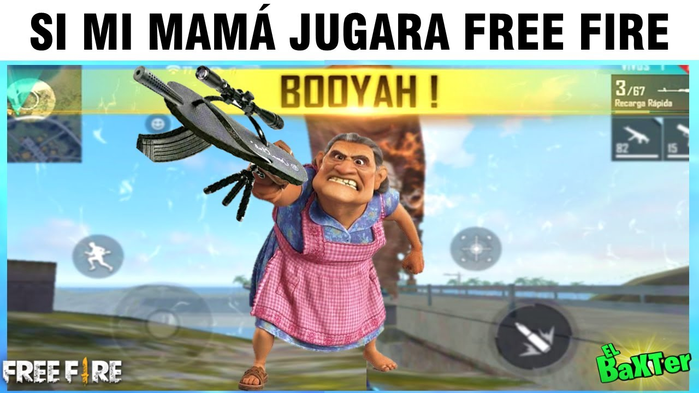
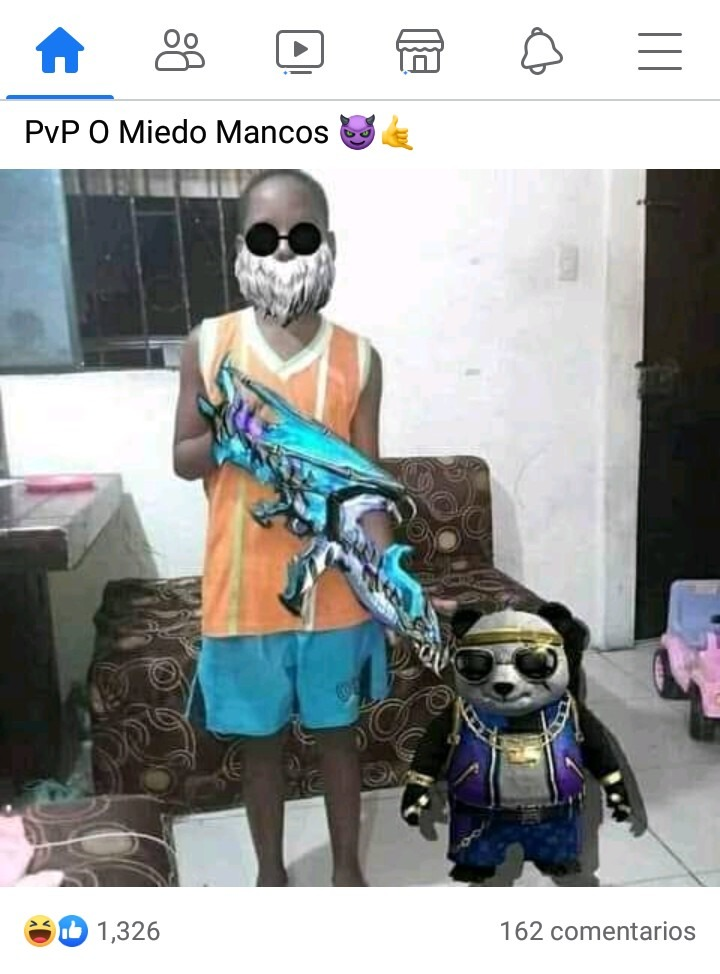

16-Float
Pushes the element to either the left or right side.
Float Left

Todo comenzó como una partida cualquiera en Free Fire. Entré con la intención de jugar solo unos minutos, pero terminé viviendo una de las mejores experiencias dentro del juego. Mi escuadra cayó en Pochinok y, apenas aterrizamos, ya había disparos por todas partes. Perdimos a dos compañeros en los primeros minutos y parecía imposible ganar esa partida. Aun así, decidimos seguir luchando. Fuimos avanzando poco a poco, recogiendo armas, curándonos en silencio y evitando llamar la atención. Cuando quedó el último círculo, solo éramos dos contra un escuadrón completo. Pensamos que todo estaba perdido, pero coordinamos un ataque perfecto y logramos eliminarlos uno por uno. Cuando apareció el Booyah en pantalla, entendí que en este juego no siempre gana el más fuerte, sino el que nunca pierde la fe.
Float Right

Recuerdo la primera vez que jugué Free Fire con mis amigos del colegio. Al principio nadie sabía jugar bien, todos corríamos sin estrategia y moríamos rápido, pero aun así nos divertíamos muchísimo. Con el tiempo empezamos a mejorar, aprendimos a usar cada arma, a cubrirnos, a movernos mejor y a confiar más en el equipo. Había noches enteras donde jugábamos hasta tarde intentando conseguir una victoria más. Algunas veces discutíamos por errores en las partidas, pero al final siempre terminábamos riéndonos. Más que un juego, Free Fire se convirtió en un lugar donde compartimos momentos inolvidables, porque detrás de cada Booyah había risas, nervios y recuerdos que todavía seguimos contando hoy.
Float con Múltiples Elementos


Una de las partidas más intensas que viví en Free Fire fue cuando decidí entrar solo en clasificatoria. Todos mis compañeros estaban desconectados y quería demostrarme que podía llegar lejos sin ayuda. La partida comenzó mal: caí en una zona llena de enemigos y apenas encontré una pistola. Tuve que esconderme, moverme con cuidado y sobrevivir usando solo estrategia. Poco a poco fui eliminando jugadores y mejorando mi equipamiento. Cuando quedaban cinco personas, el miedo y la adrenalina eran enormes. Escuchaba disparos cerca y sabía que cualquier error me sacaría de la partida. Al final quedamos uno contra uno. Mi vida estaba baja y casi sin balas, pero decidí atacar primero. Después de unos segundos eternos, apareció el Booyah en la pantalla. Ese día entendí que las mejores victorias son las que consigues cuando todos creen que vas a perder.